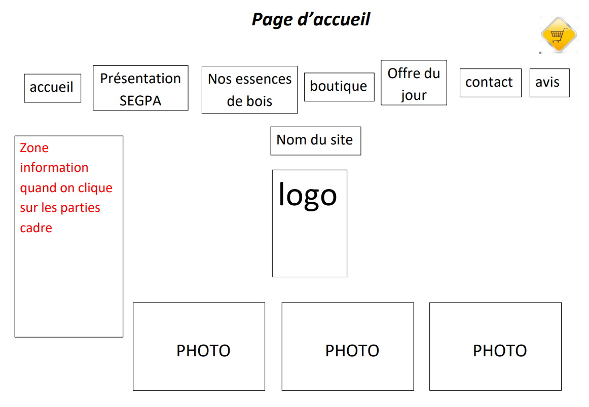
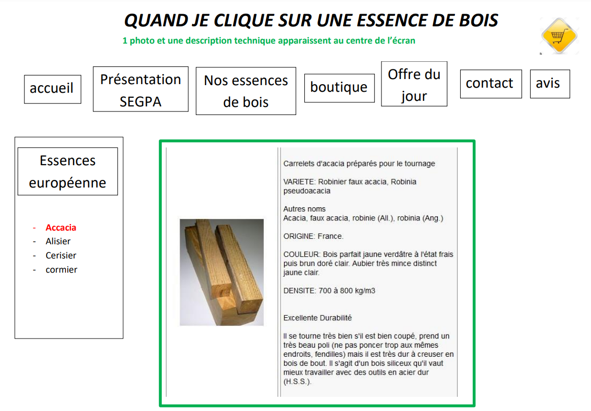
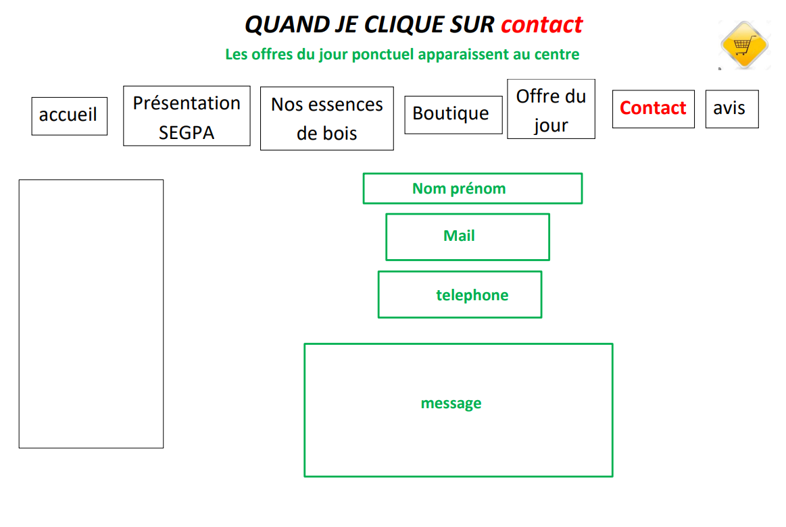
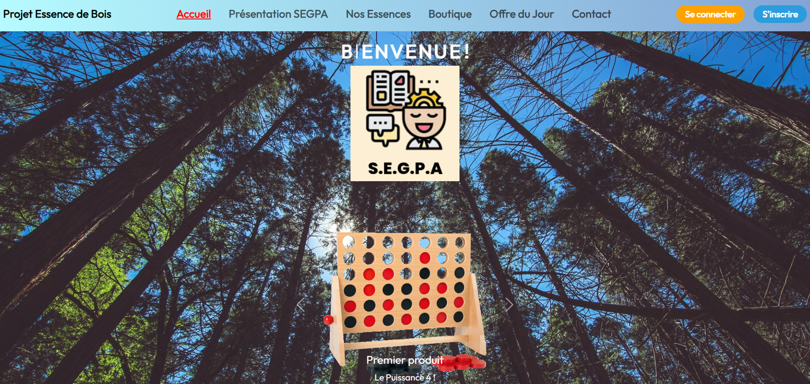
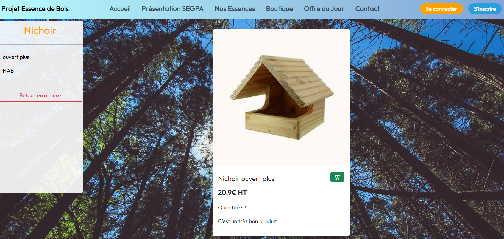
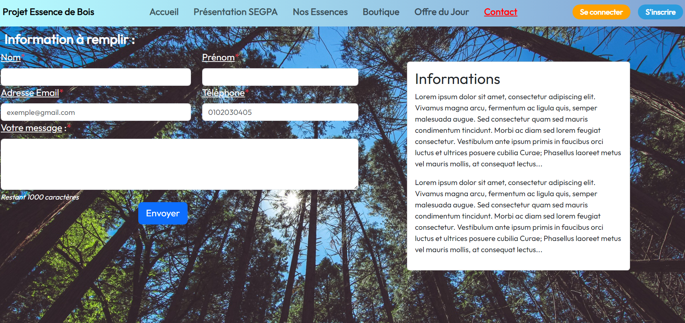

Début du stage
Début du projet du site vitrine de la section SEGPA du collège Emile Combes de Pons.
- Création des Users Stories sur Trello
- Lecture de la maquette des élèves pour la forme du site
- Générer des données sur la base de données
Commencement du développement des pages web et des fonctionalités selon la demande du client. Récupération des données depuis
la base de données puis les afficher pour l'utilisateur et de pouvoir y intéragir. La conception du site est basé sur l'architecture MVC.
MVC pour Modèle-Vue-Contrôleur qui est très répandu pour les applications WEB et vise à organiser le code en 3 catégories
- Modèles -> Représente les données et les intéractions
- Vues -> L'interface visuel des utilisateurs
- Contrôleurs -> Intermédiaire entre le modèle et la vue
L'architecture MVC n'était pas assez complète selon notre tuteur pour que le projet soit fonctionnels alors en fin de première semaines
nous sommes passés sur un autre framework plus utilisés par des profesionnels mais simplifiés par un de nos professeurs, M. Ornech,
ici pour visualiser.
Création du dépôt sur GitHub et formation.
Milieu du stage
Après avoir terminer une grande partie du BACK-END du site, il nous faut créer le design du site en fonction de la maquette données.
Maquette



Version Finale



Pour effectuer le design du site, nous allons utiliser un framework CSS open-source appellé Bootstrap.
Il fournit des outils css pour créer un site web personnalisés et responsive selon la tailel de l'écran. Bootstrap nous permet de faciliter le design du site
et de le rendre responsive au lieu de créer nous même nos classes CSS, ce qui aurait pris bien plus de temps et ne nous aurait pas permis d'avancer sur le projet.
Après avoir rattraper le design du site nous pouvons continuer sur les fonctionnalités du site dont la création de compte et l'authentification de session client/administrateur.
Les clients pourront modifier leurs profils en ajoutant des informations tels que leur téléphone, prénom, nom et adresse pour pouvoir ajouter des produits dans leurs paniers pour passer commandes.
Tandis que l'administrateur pourra accéder à son dashboard pour voir les messages de contact des utilisateurs, voir les commandes passées et pourra ajouter, modifier, supprimer des produits ou l'offre du jour.
Fin du stage
Nous avons finis le système d'authenfication, créer un compte et de rentrer le mail et le mot de passe hashé et de s'y connecter et de garder la session à travers les différentes pages.
Tout cela se passe dans un seul fichier dans un dossier config qui est auth.php.
L'administrateur peut désormais accéder à son dashboard avec toutes les fonctionnalités pour gérer les produits et son site.
Après avoir fait une bonne partie du site, nous sommes allés voir la classe SEGPA au collège pour nous faire un petit debrief avec le professeur des détails à ajouter ou modifier.
On finalise notre mission en terminant ce qu'on pouvait faire en 6 semaines de stage sur le projet.
Notre tuteur à mis en ligne notre version du site télécharger sur GitHub.
Bilan
Le stage que j'ai effectué pendant 6 semaines majoritairement en télé-travail, j'ai été en plein expérience profesionnel en tant que développeur Full Stack.
J'y ai pu améliorer mes compétences appris dans le bloc 2 du BTS SIO SLAM. J'était en vrai situation pour un vrai projet qui va être utilisé régulièrement.